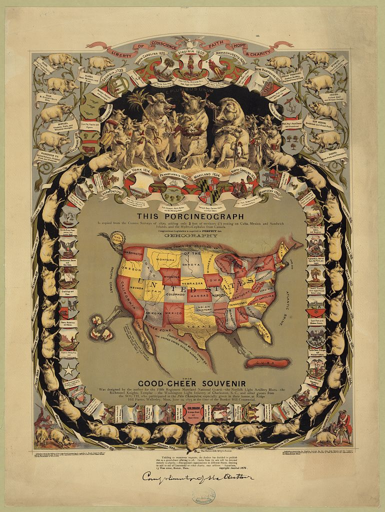

Monday, January the 23rd, 2012
back to: title, date or indexes
If you are wondering what to have for lunch today, and you happen to find yourself in Arizona, might I suggest you try that most delicious-sounding of snacks, Greasy Doings? It is just one of many regional specialities detailed on the Porcineograph, which Ptak Science Books rightly calls a “semi-magnificent map”. Click on its semi-magnificence for a larger version.
